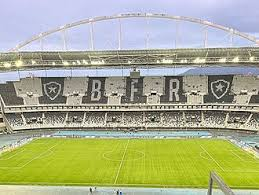
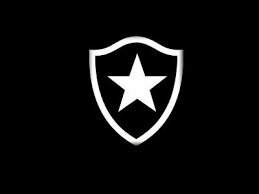
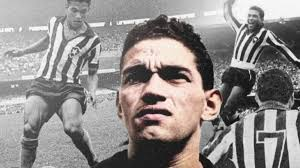
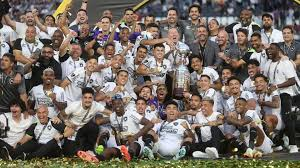
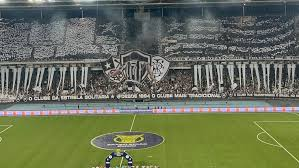

A História do Glorioso
O Botafogo de Futebol e Regatas nasceu da fusão de dois clubes históricos do Rio de Janeiro: o Botafogo Football Club, fundado em 1894, e o Club de Regatas Botafogo, fundado em 1899. A união oficial ocorreu em 1942, dando origem ao clube que conhecemos hoje com todo o seu legado e tradição. Desde o início, o Botafogo sempre se destacou por revelar grandes talentos e por jogar um futebol belo e técnico, filosofia que marcou gerações de jogadores e torcedores.
O período mais glorioso da história botafoguense ocorreu nas décadas de 1950 e 1960, quando o clube contava com uma constelação de craques que encantavam o Brasil e o mundo. Garrincha, Nilton Santos, Didi, Jairzinho e Amarildo eram alguns dos nomes que defendiam o manto alvinegro com maestria e garra. Nessa era de ouro, o Botafogo conquistou inúmeros títulos cariocas e torneios nacionais, sendo considerado o melhor clube do Brasil naquele período, com um estilo de jogo inconfundível que influenciou toda uma geração de futuros craques do futebol nacional e internacional.
Galeria de Imagens
Uma seleção de momentos e símbolos que representam a grandeza do Glorioso:





Tabelas de Dados
| Competição | Nº de Títulos | Último Título | Destaque |
|---|---|---|---|
| Copa Libertadores | 1 | 2024 | ★ Inédito |
| Campeonato Brasileiro | 3 | 2024 | Tricampeão |
| Campeonato Carioca | 21 | 2018 | Campeão |
| Copa Conmebol | 1 | 1993 | Campeão |
| Torneio Rio-São Paulo | 3 | 1968 | Consecutivo |
| Taça Guanabara | 8 | 2015 | Dominância |
| Jogador | Posição | Período | Apelido | Seleção BR |
|---|---|---|---|---|
| Garrincha | Ponta direita | 1953–1966 | Alegria do Povo | ✅ Copa 58, 62 |
| Nilton Santos | Lateral esquerdo | 1948–1964 | O Enciclopédia | ✅ Copa 58, 62 |
| Didi | Meia | 1952–1960 | O Maestro | ✅ Copa 58 |
| Jairzinho | Atacante | 1959–1974 | O Furacão | ✅ Copa 70 |
| Túlio Maravilha | Atacante | 1993–2001 | Rei do Gol | — |
| Tiquinho Soares | Atacante | 2022–2024 | Tiquinho | — |